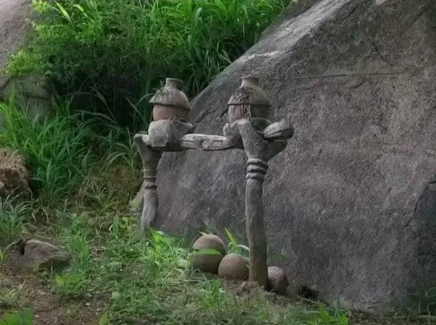
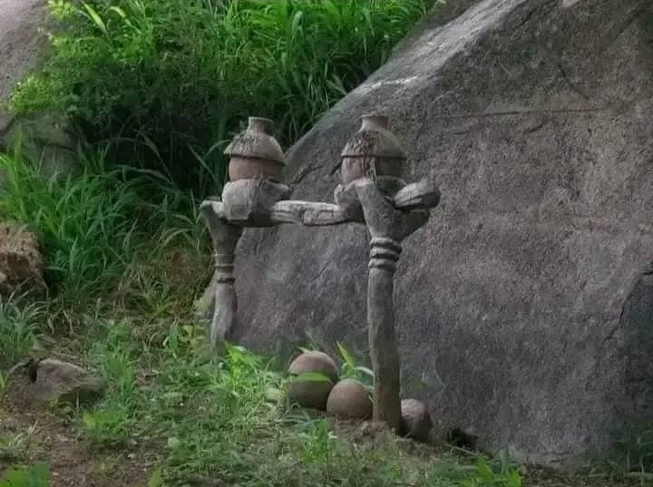

À propos du village de Koro
Le village de Koro est l'un des lieux les plus anciens de la région de Bobo-Dioulasso. Réputé pour ses habitations traditionnelles en banco, son architecture unique et son histoire liée à la fondation de la ville, Koro est un véritable musée à ciel ouvert. Le village conserve encore aujourd'hui une organisation sociale traditionnelle et des pratiques culturelles fascinantes.
Le village est également célèbre pour ses liens avec les origines de la population bobo. Il accueille encore les autels sacrés où se déroulent des rituels religieux animistes. Le chef du village y joue un rôle central, garant de la tradition et du respect des coutumes ancestrales.
On y trouve aussi de remarquables vestiges de l’histoire locale, comme d’anciens greniers à mil, des symboles totémiques, ainsi que des représentations sculptées qui illustrent les croyances et récits fondateurs du peuple bobo. Une visite à Koro est un véritable voyage dans le temps et dans l’univers spirituel de la culture bobo.
Galerie du village
 

Planifiez votre visite
Le village est accessible en transport depuis le centre-ville de Bobo. Il est conseillé d'être accompagné d'un guide local pour mieux comprendre les traditions et l'histoire du site.
Des visites guidées sont organisées régulièrement, avec la possibilité d'assister à des démonstrations artisanales, comme la poterie ou le tissage, ainsi qu'à des spectacles de danses traditionnelles selon la saison. N'oubliez pas de respecter les consignes culturelles et de demander l'autorisation avant de prendre certaines photos, notamment lors des cérémonies.